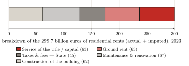
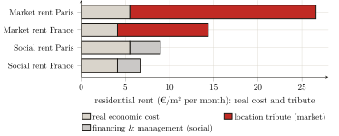
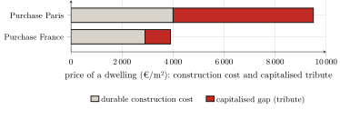

— AI translation — Claude Fable 5 (Anthropic)
Part Three — The empirical measurement of capture · Chapter 9
9 Residential rent: the inhabitant
[…] to express my self in terms of number, weight, or measure; to use only arguments of sense, and to consider only such causes as have visible foundations in nature.
William Petty, Political Arithmetick (1690)
The two preceding parts have cleared the ground. We have seen how the national accounts promote the toll into production (chapter 6), how the nomenclatures disperse it until it becomes unrecognisable (chapter 7), and how the theories that justify it give way before the figures of their own institutions (chapter 8). There remains the question the whole book has deferred to this point: how much? Of what a household pays to house itself, what share pays for housing actually produced, and what share is merely a tribute on access to land? The answer is given first for residential housing, the first and heaviest of the three measures that part III assembles. The method is the one chapters 6 and 7 prescribed: take up the figures published by the State’s statistician, and reclassify them, no longer by their technical function, but by the real relation: what pays for a production, what levies a toll. From the official aggregates alone, so that anyone can redo the calculation. With the discipline that chapters 1 and 3 laid down: never to count as rent the interest on capital actually incorporated, nor as production the tribute of the title. And with the safeguard that chapter 7 erected: not to count the same flow twice.
9.1 Rent, and what it covers: decomposing an aggregate
Let us start from the least contestable aggregate. In 2023, the rents (actual and imputed) paid or “owed” for the French residential stock amount to 299.7 billion euros: 91.1 billion in actual rents, paid by tenants, and 208.6 billion in imputed rents, attributed by convention to owner-occupiers.1 It is this block of 300 billion that this chapter decomposes.
Yet the housing account does not decompose it. It carries rent as a single mass, whose value added is in its entirety an operating surplus of the “producer” landlord — the convention that chapter 6 dismantled.2 It falls to us to apportion it, from the magnitudes the SDES publishes elsewhere. Three blocks can be isolated.
What pays for a real production, first. Housing is built and maintained: that is actual work, and it must be credited as such. Investment in new dwellings comes to 82 billion; but this envelope includes the purchase of the underlying land (18.6 billion), which is not a production: the SDES acknowledges as much itself by classing land among “non-produced” assets (chapter 7).3 Construction proper (the building, excluding land: what households, landlords and housing bodies pay to construction firms to erect new dwellings, from structural work to finishings) thus mobilises on the order of 62 billion; it is, in the account, the “construction” line itself, once the land is set apart.4 To which must be added the major maintenance and improvement works on the existing stock (façade repairs, roofing, boilers, energy renovation): 67 billion.5 Real production of housing: about 129 billion.
What the State levies, next. The property tax on built properties (28.4 billion) and transfer duties (13.0 billion) strike the income property without remunerating any housing service: they are levies, and they add to what the user pays out, but they do not go to the rentier — they go to the collectivity (chapter 6).6 On the order of 45 billion.
The remainder, finally — and this is the tribute. From the 300 billion of rents, subtract the 129 of real production and the 45 of levies: there remains, as a residual, about 126 billion euros (42 % of total rent) which pays for no construction, no maintenance and no tax, but solely for the right of access to a location. This is residential rent: the toll the user pays the rentier in order to inhabit (figure).

Let us be precise about the status of this number. It is not an item read off a table: it is a residual, obtained by subtracting from one sourced aggregate two other sourced aggregates. Its solidity therefore rests on that of its components, and its weakest link is the land share of new construction. Now, we took it at its lowest: the share the national account itself isolates (22.7 % of new construction). Any more realistic assumption only raises the capture: put at 30 % (the share of a typical project), it climbs to 131 billion; at 40 %, the Paris-region level, to 139. Residential rent thus stands between 126 billion (the floor, i.e. 42 % of rent) and 139, and it is the floor we retain.7 And one safeguard keeps this figure in its place: loan interest having already been deducted to obtain the landlord’s net surplus, it cannot be added back without counting the same flow twice (chapter 7); the housing capture therefore stops at 126 billion, and nothing warrants carrying it beyond.
9.2 The “capital” is capitalised tribute
An objection arises at once, and it touches the heart of the method. A share of these 126 billion (about half) remunerates not bare “ground rent” but the landlord’s capital: the interest he services and the profit he draws from the sum immobilised in the property. Yet chapter 3 laid down the opposite discipline: the interest on capital actually incorporated into the land — drainage, buildings, improvements — is not rent, and must be credited as a legitimate remuneration. To count this “capital” as a tribute — is that not to violate the rule we set ourselves?
No — provided one sees which capital, exactly, is remunerated here. The capital incorporated into the building (what it took to construct and maintain it) is already counted, and on the right side: it is in the 129 billion of real production. The capital remunerated by the “capital” share of the rent is of another nature: it is the price of the title, that is, capitalised ground rent (chapter 3). When a landlord acquires a dwelling, the bulk of what he pays is not the replacement cost of the walls: it is the location value, itself equal to discounted future rent. The interest he services on that sum therefore remunerates no production: it remunerates the holding of a right, that is, rent in its financial form.
That real-estate value is, for the most part, capitalised land value is a massively established fact, not a supposition. Knoll, Schularick and Steger have shown it across fourteen advanced economies and nearly a century and a half: “rising land prices explain about 80 percent of the global house price boom that has taken place since World War II” — in other words, the “levitation” of prices is, to four fifths, that of land and not that of construction.8 In France, Trannoy and Wasmer establish that land represents nearly half of the country’s real-estate value (on the order of three times GDP), and that built land, which covers 1.5 % of the territory, concentrates the bulk of that value.9 And Friggit, the State’s statistician, closes the demonstration: the price of land is a residual, the receptacle into which cheap credit pours (chapter 4).10
The conclusion is clear-cut: to remunerate the “capital” lodged in the value of a land title is not to remunerate a production; it is to serve a tribute in the form of interest. The only genuinely productive capital, that of the walls, is already counted separately. What remains, and what we file under capture, is the rent that property has turned into a financial asset. The “ascent” to ownership does not lead out of the toll: it changes its creditor (chapter 5). We return to this at the close of this chapter.
9.3 Rent and the real cost: what housing oneself would cost
The macroeconomic residual has its counterpart, more telling, at the scale of a single dwelling. Let us put the question naively: what would dwelling cost if the rent paid only for the dwelling? Take the real economic cost of a dwelling: the building amortised over its service life, routine maintenance, land counted for nothing and no capital to remunerate. Everything the market rent levies beyond that cost is, by construction, tribute.
The calculation requires assumptions; here they are. The building of a dwelling, land excluded, comes to on the order of €2 100 per square metre.11 Amortised over seventy-four years (the service life of a residential building retained by capital accounting, not the optimistic century), that makes about €28 per square metre per year; adding annual maintenance on the order of 1 % of the building’s value, one obtains a real economic cost close to 4 euros per square metre per month.12
The market rent, for its part, averages nationally on the order of 14 to 15 euros per square metre per month: the household therefore pays nearly three and a half times the real cost of its dwelling.13 In Paris, where the average rent in the open sector stands at €25.7, the ratio rises to more than four and a half times.14 The gap is not a refinement of calculation sensitive to assumptions: it is an order of magnitude, and it survives every reasonable variant. This share exceeding the real cost is nothing other than the situational tribute of chapter 4: not the price of the bricks, but that of the location, which the whole city has made and which a single party pockets.
The proof is given, by contrast, where rent is held in check. The rent of the social housing stock (€6.76 per square metre on national average, 8.96 in Paris) stands far closer to the real economic cost than the open-market rent.15 Not that social housing is built differently: its rent is set outside the logic of the land tribute. The difference between the open-market rent and the social rent measures, almost nakedly, what the market charges for the location alone: the tribute lies not in the brick, identical on either side, but in the right under which it is occupied (figure).

These ratios seem to exceed the residual from the start of the chapter: 42 % of tribute in aggregate rent, but two thirds or more at the market rent? The two measures are reconciled as soon as one sees that they do not weigh the same thing. The 126 billion residual relates the whole of rents (old leases, the social stock, imputed rents prudently assessed, all below the market rent) to the actual production expenditure of the year, which includes new construction, that is, the enlargement of the stock, not merely its upkeep. The ratio of this section confronts, for its part, the market rent, the one facing the new entrant, with the bare cost of the existing dwelling. The aggregate gives the average over the entire stock; the ratio gives the most exposed rung, where the tribute reaches two thirds or three quarters of the rent. The 126 billion are thus indeed a floor: as leases are renewed at market prices, it is towards the ratio of this section that the whole stock drifts.
9.4 Purchase, or the toll converted into interest
There remains the most widespread objection: purchase. To acquire one’s dwelling — is that not to exit the toll? Chapter 5 answered in principle; we confirm it here in figures, by showing that purchase does not abolish the tribute but converts it. The price paid is, as we have seen, capitalised rent; the buyer settles it in a flow of interest to the bank, whose productive counterpart is nil.16
The ratios confirm it, more compressed than for renting because purchase compares a price with a cost and not two flows. The price of a flat, on French average, is close to €3 900 per square metre, for a durable construction cost on the order of 2 900: a third more than the building.17 In Paris, where the square metre of existing housing trades at around €9 500 for a durable cost close to 4 000, the ratio exceeds twofold (figure).18 And the gap widens further once credit is taken into account: financed over twenty-five years, a 60-square-metre dwelling comes, interest included, to some €350 000 in France and nearly 900 000 in Paris.19 The buyer believes he is buying a roof; he is buying above all a location, and committing to service its tribute, in the form of interest, for a quarter of a century. The path to ownership, presented as a way out, thus only displaces the toll, which changes name and creditor without disappearing.

Taking stock
French residential rent amounts to about 126 billion euros a year, i.e. 42 % of rents and more than a tenth of housing expenditure. This is not a number tossed out: it is a residual, obtained by subtracting from an official aggregate the real production of housing and the State’s levies; reproducible from public data alone; robust across the whole interval of defensible assumptions (126 to 139 billion, the floor being retained); and taken, at every fork, on the side that understates it. The same tribute can be read at the scale of a dwelling: housing oneself costs, in Paris, nearly five times what the shelter alone would cost, and buying it more than double, the gap being, everywhere, the price of the location. Whether one remunerates the landlord’s “capital” or the buyer’s interest, one services, in proportion to the land, a capitalised rent with no productive counterpart: purchase does not lift the toll, it converts it.
This first tribute established, the measurement is not closed. The tribute on space does not weigh on the inhabitant alone: it weighs also on the worker, through the rent of business premises, which he pays without seeing it in the price of what he consumes. To which is added, distinct from it, the extraction of the margins stacked along the chain that produces the built stock. That is the object of the next chapter: after the visible part of the toll, which is rent, its passed-on part must be followed.
(Service des données et études statistiques (SDES) 2024a), figure 3.4 (p. 31). These rents sit within a total housing expenditure of 611.7 billion euros, i.e. 21.7 % of gross domestic product (ibid., fig. 1.10, p. 18). On the nature of imputed rent — an income that no one pays — see chapter 6; we take it up here as the accounts establish it, without reopening the point.↩︎
(Service des données et études statistiques (SDES) 2024a): imputed rent is constructed by rental equivalence (the rent the owner would pay for an identical dwelling rented on the private market), then entered as production. The account never distinguishes, within rent, what pays for the shelter from what pays for the location. This decomposition is therefore not drawn from an SDES table: it is the reconstruction this book performs on the published aggregates — precisely the reclassification “by the real relation” that chapter 7 called for.↩︎
(Service des données et études statistiques (SDES) 2024a), fig. 4.1 (p. 42): investment in new dwellings €82.0 billion = construction (building) 62.3 + land 18.6 + fees 1.2. Deducting the land is the strict application of the discipline of chapter 1: land is not produced.↩︎
That is, the “construction (building)” item of figure 4.1 (€62.3 billion), the land (18.6) being already isolated. We thereby hold to the lowest land share — the one the national account itself distinguishes (22.7 % of new construction), lower still than the “nearly a third” of a typical project established by the SDES survey on building plots ((Service des données et études statistiques (SDES) 2024b)) and the 40 to 50 % of the Paris region ((Notaires du Grand Paris 2021)). Retaining this minimal share understates the capture: any more realistic land assumption would raise it (infra).↩︎
(Service des données et études statistiques (SDES) 2024a), fig. 4.1 (p. 42), “major maintenance-improvement works”, €67.2 billion. Together with the construction of the building, this is the other face of the real production of housing: work that maintains, indeed increases, the use value of the stock.↩︎
(Service des données et études statistiques (SDES) 2024a), fig. 6.1 (pp. 71–72). We retain here a broad perimeter for the levies (≈ €45 billion); confining it to the residential property tax and strict transfer duties alone (€41.4 billion) would increase the captured residual by as much. The choice is thus, here again, conservative. A reminder from chapter 7: these sums are filed under “levies”, never related to the tribute they strike.↩︎
The internal split of the residual between “ground rent” and “servicing of the title” (≈ 63 + 63 in the figure) is indicative: it changes nothing in the total, both being captured. Friggit has shown that the price of land is in any case a residual: “it is the price of the neighbouring dwellings that […] determines the price of land, and not the reverse” ((Friggit 2024)).↩︎
Knoll, Schularick, Steger (2017). The distinction is decisive for the measurement: if the rise in prices is, to 80 %, a rise in land, then the interest serviced on the purchase price services, in due proportion, the capitalised tribute — not the building.↩︎
(Trannoy, Wasmer 2022): land ≈ 44 % of French real-estate value, ≈ 3 times GDP; built land ≈ 84 % of the value of all land. Economists of the liberal tradition — witnesses for the prosecution, not partisans of the thesis.↩︎
(Friggit 2024). The mechanism, already set out in chapter 4: easy money inflates households’ purchasing capacity, and it is the price of land that absorbs it. The interest the buyer or the landlord pays is, for the most part, the servicing of that capitalised land.↩︎
(Union sociale pour l’habitat, Banque des Territoires 2024) (USH–Banque des Territoires, Éclairages no. 33, 2023): cost price €2 550/m² of usable floor area in France, of which works 1 790, land 520, other charges 320; the building excluding land ≈ €2 100/m². We retain this social-housing cost, which is the best-established public figure; private housing does not differ from it in order of magnitude.↩︎
(OCDE 2009), ch. 13: mean service life of residential buildings 74 years (range 40–95). Calculation: €2 100/m² ÷ 74 years ≈ €28/m²/yr of amortisation; + 1 % maintenance ≈ €21/m²/yr; total ≈ €49/m²/yr, i.e. ≈ €4.1/m²/month. The result depends on two levers we own up to: a shorter service life or higher maintenance raise it. We have taken here the central values of the literature, not those most favourable to the thesis; even so, the gap to the market remains an order of magnitude.↩︎
National market rent: on the order of €15/m² ((SeLoger / Bien’ici 2026)); the “charges included” listings figure of (LocService 2024) (€17/m²) is somewhat higher, the base differing (flow, charges included). We retain the low end, excluding charges, comparable to the economic cost.↩︎
(Observatoire des loyers de l’agglomération parisienne (OLAP) 2025): average rent €25.7/m²/month (Paris intra-muros, open sector, unfurnished, at 1 January 2024; 26.3 a year later). The real economic cost there is somewhat higher (more expensive construction), on the order of €5.5/m²/month; the ratio approaches five.↩︎
(Union sociale pour l’habitat 2025) for the average HLM rent (€6.76/m²); the Paris figure (≈ 8.96) is of the same order as the average Paris social rent, around €9/m² at 1 January 2024 — the highest in Île-de-France (7.7) — (DRIHL Île-de-France 2024). Social housing does not escape every cost (financing, management), but it is set outside the logic of the land tribute: that is why it approaches the real cost.↩︎
(Portalez 2024) for “servitude through purchase”; chapter 5 for the demonstration in principle. The buyer has not left the position of paying user: he pays the same toll, to another creditor, for as long as he repays.↩︎
Price: average flat in France ≈ €3 918/m² ((SeLoger / Bien’ici 2026)); durable cost of the building ≈ €2 900/m² (construction cost plus a quality premium, (Union sociale pour l’habitat, Banque des Territoires 2024)). Ratio ≈ 1.35.↩︎
Standardised Paris price 2024: ≈ €9 500/m² (Greater Paris notaries); the 2021–2022 peak (≈ 10 600) has been partly corrected. Durable cost of the building in the Paris region ≈ €4 000/m². Ratio ≈ 2.3.↩︎
A 25-year loan at 3.5 %: the total cost (principal + interest) increases the purchase price by about half. The interest services, in proportion to the land share of the price (chapter 4), the capitalised tribute: this is the conversion of the toll into debt service.↩︎